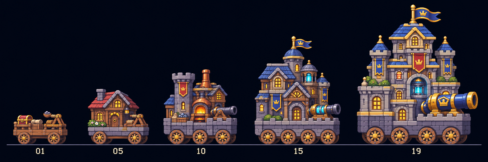
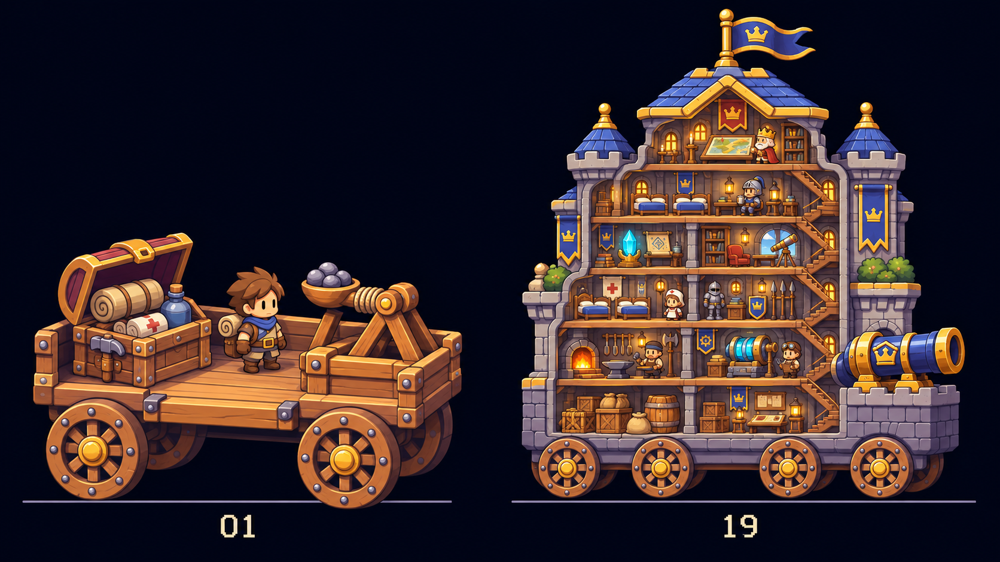

검토용 기획 제안 v1 · 2026-11-26 · 현재 게임에 미반영
짐수레에서 왕관 대성까지
성 19단계 성장 · 포대 · 실내 설계
성은 수집해서 출정 대상을 고르는 대상이 아니라, 한 이동 거점이 개조되며 성장한 결과다. 각 단계는 이전 구조의 흔적을 남기되 새 기능이 외형으로 읽혀야 한다. 19단계를 각각 설계하고, 마지막에 장식을 억지로 늘리는 대신 건물의 덩어리·공간·포의 무게로 차이를 만든다.
1. 이번 안에서 고정하는 기준
- 첫 성은 지붕 없는 낮은 짐수레. 현재 첫 집의 완성도는 새 5단계 전후로 이동한다.
- 각 단계는 단순 확대가 아니다. 외형·포대·실내의 변화 이유를 하나씩 지정한다. 세계관은 개척·수비·공방·왕실로 연결되며, 숲·빙하·해적 테마가 이유 없이 매번 교체되지 않는다.
- 19개 모두 같은 카메라 각도·광원·원본 배율. 본체 폭 256→384(1.50배), 높이 160→896(5.60배). 면적은 약 8.40배. 이 수치는 제작용 제안이며 현행 엔진의 크기 상수를 바꾼 값이 아니다.
- 표의 본체 크기에는 바퀴·포대·깃발의 추가 여유 영역을 포함하지 않는다. 완성 조립 bounds와 본체 bounds를 각각 기록한다. 포가 추가돼도 가로가 화면을 넘지 않는지 따로 검증한다.
- 포대는 항상 오른쪽 앞 바닥에 직접 앉는다. 포의 뒤쪽은 본체 앞벽 안으로 들어가고, 앞벽의 얇은 가림 부분이 포의 발치 일부를 가린다. 외부 연결 다리·긴 지지대·공중에 뜬 포는 금지한다.
- 바퀴는 앞쪽과 뒤쪽을 모두 분리하고 전후 깊이를 맞춘다. 성이 클수록 축 수와 바퀴 직경이 함께 늘어난다. 덩치에 비해 지나치게 가는 바퀴는 쓰지 않는다.
2. 직접 제작한 대표 외형 샘플
01·05·10·15·19 단계의 방향을 비교하는 새 콘셉트 그림. 같은 줄·같은 배율을 목표로 생성한 검토용 원화이며, 아래 치수 도표가 정량 기준이다. 생성 이미지에서 정확한 치수나 연결이 어긋난 부분은 최종 제작 시 도표와 조립 규칙으로 교정한다.

이 그림은 다섯 대표 단계의 외형 탐색용이다. 19개 최종 원화·분리 파츠·실내 완성 리소스가 이미 제작되었다는 뜻은 아니다.
외형 생성 시안의 최종 성은 폭이 목표보다 넓고, 첫 수레 보급함의 금속 장식도 제안보다 강하다. 제작 시 1.50배 본체 폭 기준과 무광 목재 보급함으로 교정한다. 생성 그림을 치수 측정용 원본으로 사용하지 않는다.
3. 19단계 전체 크기 비교
한 줄을 좌우로 스크롤해 비교한다. 아래 막대는 본체의 치수 비교도이며 실제 성 원화가 아니다. 단계마다 칸에 꽉 차게 다시 맞추는 방식은 사용하지 않는다.
4. 단계별 상세 설계
높이 구간은 사람이 활동할 수 있는 층 또는 다락이며, 작업 구역은 그 안의 물리적 공간 수다. 초반 천막·적재함에는 가짜 실내를 그리지 않는다. 실내 수가 늘어도 능력치 강화 카테고리는 기존 4종을 유지한다.
01 개척자의 짐수레
본체 256 × 160 · 1개 높이 구간 / 1개 작업 구역 · 2축 / 앞뒤 4개 바퀴
- 외형
- 난간이 낮은 나무 짐수레. 집·석벽·첨탑 없이 천막 말이와 보급함만 싣는다.
- 이전 단계와 차이
- 첫 단계의 정체성은 집이 아니라 이동 중인 생존 거점. 바퀴와 짐칸이 가장 먼저 읽혀야 한다.
- 포대
- 소형 밧줄 투석기 · 조립 기준 영역 64 × 48
큰 둥근 돌 1개. 손잡이 감기 → 팔 젖히기 → 오른쪽으로 휘두르기 → 컵 복귀. - 실내
- 덮개를 열어 짐칸을 보여준다. 통합 보급함 1개에 식량·연장·약품·방패를 담아 기존 4종 강화 메뉴로 연결한다.
- 채색
- 밝은 참나무·황토 천·작은 붉은 표식
02 천막 보급수레
본체 262 × 184 · 1개 높이 구간 / 1개 작업 구역 · 2축 / 앞뒤 4개 바퀴
- 외형
- 같은 차체에 낮은 천막 지붕과 빗물받이를 추가한다.
- 이전 단계와 차이
- 처음으로 비를 피하는 생활 공간이 생긴다. 벽돌이나 기와는 아직 없다.
- 포대
- 권양 투석기 · 조립 기준 영역 68 × 50
돌 1개. 보이는 작은 감개가 회전하고 팽팽한 줄이 팔을 당긴다. 탄환 크기는 1단계보다 10% 증가. - 실내
- 천막 앞면이 걷히면 보급함·접이식 침상·물통이 보인다. 새 방을 만들지 않고 같은 공간의 생활감만 늘린다.
- 채색
- 거친 목재·아이보리 천·적갈색 로프
03 판자 야영차
본체 268 × 208 · 1개 높이 구간 / 1개 작업 구역 · 2축 / 앞뒤 4개 바퀴
- 외형
- 천막 아래쪽에 판자 옆벽을 두르고 작은 출입문을 낸다.
- 이전 단계와 차이
- 천막은 유지하고 하부 벽만 보강한다. 수레가 갑자기 완성된 집으로 바뀌지 않는다.
- 포대
- 비틀림 투석기 · 조립 기준 영역 72 × 54
굵은 꼬임 밧줄이 축 옆에 보인다. 팔 반동과 밧줄 복원으로 힘이 커졌음을 표현한다. - 실내
- 앞 판자와 천막을 걷어 한 칸의 공동실 공개. 침상 아래 창고, 문 옆 약품 상자를 배치한다.
- 채색
- 짙어진 목재·바랜 붉은 천·철못 소량
04 목책 경계차
본체 274 × 234 · 1개 높이 구간 / 2개 작업 구역 · 2축 / 앞뒤 4개 바퀴
- 외형
- 판자 벽을 높이고 뒤쪽에 짧은 관측 발판과 사다리를 세운다.
- 이전 단계와 차이
- 전체를 높이는 대신 한쪽 관측대만 한 단 올려 첫 비대칭 실루엣을 만든다.
- 포대
- 철띠 보강 투석기 · 조립 기준 영역 76 × 56
팔과 컵은 목재, 축과 줄감개만 철띠로 보강. 돌 1개와 짧은 먼지 흔적. - 실내
- 생활 칸과 보급·수리 칸을 낮은 칸막이로 나눈다. 사다리는 아직 실내의 새 층으로 계산하지 않는다.
- 채색
- 목재·검은 철띠·바랜 붉은 경계 깃발
05 목조 개척소
본체 280 × 264 · 2개 높이 구간 / 2개 작업 구역 · 3축 / 앞뒤 6개 바퀴
- 외형
- 작은 목조집과 낮은 돌턱. 현재 첫 성의 형태를 단순화해 이 위치에 배치한다.
- 이전 단계와 차이
- 처음으로 단단한 지붕과 따뜻한 창문이 등장한다. 현재 첫 성을 그대로 복사하지 않고 벽돌 양과 장식을 줄인다.
- 포대
- 이중 꼬임 투석기 · 조립 기준 영역 80 × 58
양쪽 밧줄 뭉치가 감기며 팔이 긴장한다. 컵은 발사 방향과 반대로 젖혀졌다가 오른쪽으로 돌을 던진다. - 실내
- 1층은 보급·작업실, 낮은 다락은 침상·치료 구역. 다락을 넓은 완성 방처럼 그리지 않는다.
- 채색
- 붉은 기와 소량·참나무·따뜻한 회색 돌
06 목조 망루 거점
본체 286 × 296 · 2개 높이 구간 / 3개 작업 구역 · 3축 / 앞뒤 6개 바퀴
- 외형
- 목조집 뒤에 각진 망루를 세우고 작은 발코니를 붙인다.
- 이전 단계와 차이
- 같은 집의 흔적을 남기며 뒤쪽 높이가 늘어난다. 두 번째 거대한 건물을 얹지 않는다.
- 포대
- 소형 추식 투석기 · 조립 기준 영역 86 × 62
짧은 균형추가 차체 안쪽으로 내려간다. 돌 1개. 무기의 윗쪽 운동 공간을 비워 둔다. - 실내
- 아래 보급 창고, 중간 수리·무기 작업대, 위쪽 휴식 다락. 사다리를 실제로 오르내릴 수 있게 잇는다.
- 채색
- 목재 중심·회색 돌턱·붉은 지붕
07 석조 초소
본체 292 × 330 · 2개 높이 구간 / 3개 작업 구역 · 3축 / 앞뒤 6개 바퀴
- 외형
- 목조집의 1층 외벽 일부를 돌로 교체하고 돌출 감시실을 만든다.
- 이전 단계와 차이
- 돌은 아랫부분부터 들어간다. 위층 목재와 이전 지붕을 남겨 개조의 연속성을 보인다.
- 포대
- 대형 추식 투석기 · 조립 기준 영역 92 × 66
추는 성 안쪽 홈으로 움직인다. 돌의 크기를 키우되 발사 횟수는 그대로 1회. 바닥과 주축의 하중 연결을 강조한다. - 실내
- 보급 창고, 무기·방호 작업실, 치료·휴식실. 추의 통로는 주민 이동 통로와 분리한다.
- 채색
- 중간 회색 석재·붉은 목조 지붕·검은 철
08 변경 성문 요새
본체 300 × 366 · 3개 높이 구간 / 4개 작업 구역 · 3축 / 앞뒤 6개 바퀴
- 외형
- 낮은 성문과 돌벽, 한쪽의 짧은 사각탑이 생긴다.
- 이전 단계와 차이
- 성벽은 이 단계부터. 탑 두 개와 성문을 동시에 과장하지 않고 앞면 덩어리를 분명히 한다.
- 포대
- 성벽 노포 · 조립 기준 영역 98 × 64
쇠촉을 단 굵은 화살 1발. 두 활대가 안쪽으로 휘고 장전 레일을 따라 오른쪽으로 발사한다. - 실내
- 보급실·병기실·치료실·방호실을 처음으로 각각 분리한다. 탑 안 계단이 3개 층을 연결한다.
- 채색
- 회색 석재·오래된 붉은 지붕·황동 소량
09 광산 보강성
본체 308 × 404 · 3개 높이 구간 / 4개 작업 구역 · 3축 / 앞뒤 6개 바퀴
- 외형
- 돌벽 아래에 철제 띠를 두르고 작은 광석 창고와 짧은 연통을 만든다.
- 이전 단계와 차이
- 왕실 장식 대신 채굴·수리의 기능적 디테일로 변주한다. 8단계의 성문과 사각탑은 남긴다.
- 포대
- 초기 흑철포 · 조립 기준 영역 104 × 68
짧고 두꺼운 포신 1개, 큰 철구 1발. 심지 점화 → 짧은 후퇴 → 연기 → 바퀴 달린 내부 포가 복귀. - 실내
- 4종 방을 유지하되 병기실에는 도가니, 생산실에는 광석 선반을 둔다. 새로운 능력치는 만들지 않는다.
- 채색
- 회색 돌·흑철·낮은 채도의 구리
10 주조 공방 요새
본체 316 × 444 · 3개 높이 구간 / 5개 작업 구역 · 3축 / 앞뒤 6개 바퀴
- 외형
- 높이가 다른 두 덩어리와 굵지 않은 주조 굴뚝. 받침은 돌이고 설비만 금속이다.
- 이전 단계와 차이
- 증기 공장이 전체 성을 대체하지 않는다. 굴뚝은 주탑보다 낮고 주요 창문을 가리지 않는다.
- 포대
- 공성 단포 · 조립 기준 영역 112 × 72
앞이 넓은 짧은 공성포. 느리고 큰 철구 1발. 포가 후퇴하고 포신 안에 남은 불빛이 꺼진다. - 실내
- 기존 4실에 주조 부속 작업칸 추가. 주조칸은 병기실의 확장 공간이며 별도 강화 비용을 받지 않는다.
- 채색
- 중간 회색 돌·산화 구리·검은 강철
11 수로 냉각성
본체 324 × 486 · 3개 높이 구간 / 5개 작업 구역 · 3축 / 앞뒤 6개 바퀴
- 외형
- 주조 공방의 벽에 물통·낮은 냉각 수로·작은 수차를 연결한다.
- 이전 단계와 차이
- 색상 테마만 바꾸지 않고 냉각 설비가 성의 실제 측면 볼륨을 바꾼다.
- 포대
- 청동 장포 · 조립 기준 영역 118 × 74
10단계보다 긴 단일 포신, 철구 1발. 후퇴 거리를 줄이고 복귀 장치를 보강한다. 냉각 수증기는 작게. - 실내
- 생산실에 물 저장통, 주조칸에 냉각조. 수로는 벽 안에 있고 방을 가로지르는 큰 파이프는 피한다.
- 채색
- 청동·젖은 회색 돌·적은 청록 지붕
12 병참 성채
본체 332 × 530 · 4개 높이 구간 / 6개 작업 구역 · 4축 / 앞뒤 8개 바퀴
- 외형
- 아래 병참동과 위 지휘동을 계단형으로 연결한 중형 성채.
- 이전 단계와 차이
- 높이뿐 아니라 아랫동의 실제 수용 공간이 한 칸 늘어난다. 첫 왕국 문장은 작게 등장한다.
- 포대
- 쌍열 교대포 · 조립 기준 영역 126 × 78
나란한 두 포신이 한 발씩 교대로 발사. 한 번의 행동 피해량을 두 시각 타격으로 나누며 적의 반격은 1회만. - 실내
- 생산실 확장 창고를 추가해 총 6작업 구역. 물류 통로를 주 계단과 분리하고 병참 담당 동료가 왕복한다.
- 채색
- 따뜻한 회색 돌·청록 기와·청동
13 증기 장갑성
본체 340 × 576 · 4개 높이 구간 / 6개 작업 구역 · 4축 / 앞뒤 8개 바퀴
- 외형
- 아래쪽 장갑판과 한 개의 증기 기관실. 위층은 여전히 석조 성이다.
- 이전 단계와 차이
- 금속판을 모든 벽에 붙이지 않는다. 차대와 포대 주변만 두꺼워져 무게 중심을 낮춘다.
- 포대
- 증기 완충 중포 · 조립 기준 영역 134 × 82
한 개의 굵은 포신, 큰 철구 1발. 포신 뒤의 작은 피스톤이 압축되고 증기 배출 후 복귀한다. - 실내
- 부속 작업칸을 기관·정비 구역으로 교체한다. 기관은 움직이는 배경 오브젝트이며 강화 카테고리를 추가하지 않는다.
- 채색
- 회색 석재·짙은 강철·무광 황동
14 룬 동력성
본체 346 × 624 · 4개 높이 구간 / 7개 작업 구역 · 4축 / 앞뒤 8개 바퀴
- 외형
- 중앙동 내부에 작은 룬 동력실을 설치하고 탑 지붕 일부를 푸른색으로 바꾼다.
- 이전 단계와 차이
- 마법은 이전 증기 기술을 보조한다. 성 전체가 수정 덩어리로 바뀌지 않으며 기관실 흔적을 남긴다.
- 포대
- 룬 각인 중포 · 조립 기준 영역 142 × 86
철구 1발. 발사 직전 포신의 각인 2~3개만 켜지고, 탄환이 떠난 뒤 바로 꺼진다. - 실내
- 룬 제어 작업칸 추가. 병기·방호 시스템의 보조 공간이며 주민 출입구와 안전 난간을 둔다.
- 채색
- 회색 돌·남색 기와·탁하지 않은 청록 발광 소량
15 왕실 수비성
본체 352 × 674 · 5개 높이 구간 / 7개 작업 구역 · 4축 / 앞뒤 8개 바퀴
- 외형
- 넓은 중앙동과 높이가 다른 양옆 탑, 작은 왕실 발코니를 갖춘다.
- 이전 단계와 차이
- 성의 덩어리를 먼저 왕실급으로 만들고 금장식은 문·처마·포대에만 제한한다.
- 포대
- 마력 보조 공성포 · 조립 기준 영역 150 × 90
물리 포탄 1발에 짧은 빛 꼬리. 포신 뒤 에너지실이 켜지지만 발사구는 여전히 금속 대포로 보인다. - 실내
- 같은 7구역을 넓은 5개 층에 재배치한다. 치료실은 채광 창 옆, 생산 창고는 최하층으로 유지한다.
- 채색
- 남색 지붕·밝은 회색 돌·절제된 금장
16 도서 관측성
본체 360 × 726 · 5개 높이 구간 / 8개 작업 구역 · 4축 / 앞뒤 8개 바퀴
- 외형
- 수비성 중앙동 뒤에 관측실과 작은 도서 구역이 생긴다.
- 이전 단계와 차이
- 하늘로 가느다란 첨탑만 늘리지 않는다. 관측실은 사람이 들어갈 수 있는 넓이의 방이다.
- 포대
- 이중 약실 마력포 · 조립 기준 영역 158 × 94
포신은 1개, 뒤쪽 약실 2개가 순차 점등. 하나의 큰 포탄에 두 번의 충전 박자로 힘을 축적한다. - 실내
- 도서·관측 작업칸 추가. 병기실과 방호실의 연구 연출을 공유하되 새로운 연구 재화나 대기시간은 만들지 않는다.
- 채색
- 남색·회색 돌·청록 유리·금색 모서리
17 기사단 대성채
본체 368 × 780 · 5개 높이 구간 / 8개 작업 구역 · 4축 / 앞뒤 8개 바퀴
- 외형
- 두꺼운 하부 성벽, 중앙 기사단 홀, 층별로 뒤로 물린 테라스.
- 이전 단계와 차이
- 앞 성문과 중심축은 유지한다. 장식 대신 주탑·보조탑·테라스의 명확한 크기 차이로 강함을 준다.
- 포대
- 룬 가속 공성포 · 조립 기준 영역 166 × 98
굵은 포신 앞에 3개의 짧은 가속 고리. 금속 포탄 1발이며 긴 레이저나 SF 레일건으로 바꾸지 않는다. - 실내
- 7층처럼 잘게 쪼개지 않고 5개 큰 층을 유지한다. 기사단 홀은 휴식·방호 기능의 확장 작업 구역이다.
- 채색
- 짙은 남색·밝은 돌·강철·적은 금장
18 천공 왕실 요새
본체 376 × 836 · 6개 높이 구간 / 9개 작업 구역 · 4축 / 앞뒤 8개 바퀴
- 외형
- 넓은 왕실 중앙동에 작은 옆탑과 전망 테라스. 천공은 높은 곳을 달리는 이미지이며 부유성은 아니다.
- 이전 단계와 차이
- 공간을 비워 둔 큰 테라스로 마지막 단계의 여유와 규모를 만든다. 모든 빈 면을 장식으로 채우지 않는다.
- 포대
- 왕실 장거리 중포 · 조립 기준 영역 174 × 104
금속 포신과 금장 고정띠, 한 발의 거대한 포탄. 후퇴가 성의 안쪽으로 일어나며 외부에 긴 지지대를 만들지 않는다. - 실내
- 지휘·전망 작업 구역 추가. 보급 물류와 지휘 구역이 계단으로 연결되고 주민 이동 폭은 유지한다.
- 채색
- 남색·황금색 지붕 모서리·따뜻한 회색 벽
19 황금 왕관 대성
본체 384 × 896 · 6개 높이 구간 / 10개 작업 구역 · 4축 / 앞뒤 8개 바퀴
- 외형
- 큰 중앙 본관, 낮은 보조탑 두 개, 넓은 계단식 테라스로 완성한 왕관형 실루엣.
- 이전 단계와 차이
- 복잡한 부품 대신 3개의 큰 건물 덩어리와 1개의 거대한 포가 핵심. 금색은 밝은 지붕 테두리와 문장에 집중한다.
- 포대
- 왕관 공성 주포 · 조립 기준 영역 184 × 112
육중한 단일 포신과 두꺼운 금장 띠. 성 안쪽 약실 충전 → 큰 포탄 1발 → 짧고 무거운 반동 → 천천히 복귀. 광선으로 바꾸지 않는다. - 실내
- 중앙 지휘 홀을 더해 10개 작업 구역. 생산 창고·무기 공방·치료실·방호실이 기준이고 나머지 6곳은 네 시스템의 생활·운영 확장 공간이다.
- 채색
- 남색 지붕·따뜻한 회색 돌·선명한 황금 포인트
5. 포대의 위치·크기·애니메이션
발사 방향은 화면 오른쪽이다. 투석기는 포구처럼 오른쪽으로 컵을 붙여 놓는 것이 아니라, 컵이 축의 뒤쪽에서 젖혀졌다가 앞으로 휘둘러지며 돌이 오른쪽으로 빠져나가도록 작동을 설계한다. 노포는 활대와 장전 레일, 화약포는 후퇴하는 포신으로 동작을 읽히게 한다.
- 조립 순서: 뒤쪽 바퀴 → 실내 또는 본체 → 포대 고정 하부 → 움직이는 팔/포신 → 본체 앞벽 가림 부분 → 앞쪽 바퀴 → 탄환·일시 효과.
- 앵커는 차체 앞바퀴 위의 바닥 접점으로 지정한다. 접점·발사구·회전축·반동축·가림 영역은 원본 좌표로 저장한다. 화면 좌표를 단계별로 눈대중 보정하지 않는다.
- 먼저 성과 포가 붙은 완성 그림에서 위치·바닥·앞벽 가림을 확정한 뒤 분리한다. 분리 후 재조립 화면이 완성 그림과 같은지 겹쳐 확인한다. 연결 장치를 새로 그려 빈틈을 때우지 않는다.
- 투석기: 고정 프레임/권양기, 회전 팔/컵, 줄, 돌을 분리한다. 작은 추식 투석기는 추의 하강 통로를 본체 안에 확보한다.
- 대포: 고정 포가, 반동 포신, 약실/충전 장치, 필요시 작은 차폐판으로 나눈다. 후퇴는 본체 안쪽으로, 과한 통째 흔들림은 금지한다.
- 일반 한 행동의 제안 시간: 준비 0.15~0.30초 → 발사 0.08~0.15초 → 복귀 0.35~0.65초. 최종 주포는 복귀를 최대 0.85초까지 늘려 무게를 준다. 피해 판정과 적 반격 횟수는 기존 턴 규칙을 따른다.
- 탄환의 제안 표시 직경은 1단계 돌 약 18 단위에서 19단계 포탄 약 36 단위까지. 실제 전투 배율에서 확인하고 최소 12 화면 픽셀 정도의 읽힘을 확보한다. 구슬처럼 사라지는 작은 탄환과 성보다 큰 폭발은 피한다.
- 12단계의 두 포신은 두 번의 적 턴을 만들지 않는다. 한 번의 공격 판정을 두 번의 시각 타격으로 나누는 연출 제안이다. 실제 판정 분할은 구현 단계에서 중복 피해 방지와 함께 검증해야 한다.
6. 실내의 강화 구조
방 수와 능력치 종류를 분리한다. 현재 게임에는 생산·공격력·체력·방어력 4종 시설과 별도 포대 강화가 있다. 실내가 1→10구역으로 늘어난다고 새 강화 버튼을 계속 늘리거나 같은 능력치를 중복 구매하게 만들지 않는다.
| 기존 시스템 | 1단계 표현 | 중간 표현 | 최종 표현 |
|---|
| 생산 | 보급함 안 식량·재료 꾸러미 | 독립 창고·냉각 수조 | 병참 창고·보급 물류 구역 |
| 공격력 | 보급함에 걸친 연장·숫돌 | 무기 작업대·주조칸 | 왕실 병기 공방·관측 연구칸 |
| 체력 | 천·물통·약품 주머니 | 침상·치료실 | 의무실·주민 휴식 홀 |
| 방어력 | 함 옆 작은 방패와 수리 판자 | 방호 작업실·기관 정비 | 방호 제어실·기사단 홀 |
1~3단계는 통합 보급함을 터치하면 네 강화 항목을 보여준다. 4단계부터 물리적 구역을 분리하고, 8단계에서 네 시설이 각각 보인다. 그 이후 늘어나는 방은 기존 시스템의 확장·생활 공간이며, 관련 시설 상세로 연결한다. 초반부터 강화 효과를 잠그는 새로운 밸런스 변경은 이 안에 포함하지 않는다.
시설 Lv.0~5는 방 전체를 매번 다시 그리는 대신 오브젝트의 수와 완성도로 읽힌다. Lv.0 기본 물통·연장 → Lv.1 정돈된 작업대 → Lv.2 보관함/도구 추가 → Lv.3 제대로 된 설비 → Lv.4 숙련 작업 환경 → Lv.5 정돈된 완성 설비. 각 시설만의 물건을 쓰고, 같은 빛나는 수정과 금 테두리를 네 방에 반복하지 않는다.
첫 수레와 최종 성의 실내 비교 샘플

이 판은 내부 물건을 보기 위해 첫 수레를 확대했다. 두 성의 크기를 비교하는 그림이 아니다. 이미지 속 인물은 배치·가구 크기용 임시 인물이며, 게임에는 기존 히어로·동료를 그대로 사용한다. 최종 성은 6개 층에 2·2·2·2·1·1구역을 둔 배치 예시다.
7. 실내 드래그·클리핑·주민
- 1~4단계: 옆판/천막을 여는 짧은 드래그. 아직 방이 없는 단계는 적재 공간을 공개한다. 5단계부터 전면 외벽을 걷는 컷어웨이로 이어진다.
- 성 외형을 별도로 새로 그린 다른 건물로 바꾸지 않는다. 같은 외곽 실루엣 안에 실내를 배치하고, 전면 벽만 숨긴다. 지붕과 측면 벽은 유지해 전체 입체감을 살린다.
- 바닥판은 윗면을 보이고, 벽과 바닥 사이에 가구가 실제로 서도록 배치한다. 각 방의 클리핑 폴리곤, 주민 보행선, 계단 접속점을 메타데이터로 정의한다.
- 1단계 주민은 짐칸 앞 작은 작업 구역과 바깥 레일 바닥을 쓴다. 없는 방에 주민을 넣거나 궤도 아래로 내려가게 하지 않는다. 보유한 동료만 배치한다.
- 시각적 주민 상한 제안: 1~4단계 1~2명, 5~8단계 2~3명, 9~13단계 3~5명, 14~19단계 4~6명. 높은 등급 우선으로 고르고 순환 교체한다. 방마다 1명씩 의무 배치해 작아지는 현상을 피한다.
- 강화 메뉴의 미리보기는 실제 실내 합성 결과에서 해당 구역을 클리핑해 사용한다. 새로운 나무판 바탕 위에 별도 아이콘을 놓는 방식으로 되돌아가지 않는다.
- 전투 시작: 밖의 주민 귀환 → 실내 전면 벽 닫힘 → 바퀴·레일 이동 → 전투 위치와 배율로 연결. 포대 앵커는 이동 중에도 같은 본체 좌표를 따른다.
8. 채색·입체감·해상도
현재 히어로·동료의 읽기 쉬운 색 덩어리와 첫 성의 단순한 채색을 기준으로 한다. 왼쪽 위의 주광, 밝은 윗면, 중간 정면, 어두운 오른쪽 면의 3~4단계 명암을 쓴다. 벽돌 하나하나의 작은 입체감보다 건물 전체의 앞·옆·윗면 차이가 먼저 읽혀야 한다.
- 벽돌 선은 중간 밝기로 제한하고, 표면 노이즈·랜덤 금장·작은 수정 장식은 억제한다. 최종 성도 크고 명확한 벽면과 비어 있는 테라스가 있어야 한다.
- 화려함은 남색 지붕, 금색 모서리, 큰 문장, 높은 중앙동과 거대한 포의 조합에서 만든다. 민둥 건물로 톤다운하거나 작은 장식 수백 개로 디테일을 채우지 않는다.
- 본체·바퀴·포·실내는 같은 원본 밀도에서 함께 제작한다. 바퀴와 포를 별도 캔버스에 크게 그려 축소하는 방식으로 선 굵기와 질감이 달라지지 않게 한다.
- 디자인 단위의 4배 마스터에서 시작하고 모든 파츠를 동일한 내보내기 배율로 제작한다. 런타임 텍스처 해상도는 실제 화면 샘플과 200 MiB 이미지 예산을 보고 확정한다. 4배 마스터를 전부 무조건 게임에 넣지 않는다.
- 최종 출력에서 본체의 비율은 고정한다. 단계별 도감 칸에 맞춰 서로 다른 축으로 늘리거나 키 큰 성만 같은 크기로 축소하지 않는다.
9. 화면과 크기 검수
- 1:1.33과 1:2.2 각각에서 01·05·10·15·19의 로비/전투 20조합을 우선 검수한다. 그 다음 19단계 전체를 같은 조건으로 확인한다.
- 로비의 큰 성은 본래 배율을 유지하고 위아래 스크롤로 관찰한다. 원경·레일·메뉴는 성 관찰 스크롤 때문에 함께 위아래로 움직이지 않는다.
- 전투 배율은 로비보다 작아질 수 있지만 그 규칙은 모든 성에 동일하게 적용한다. 큰 성만 별도 축소하지 않는다. 짧은 화면에서는 포와 하부가 기본으로 보여야 하며, 상부는 스크롤로 본다.
- 19개 한 줄 비교는 바퀴 바닥 기준선과 원본 배율을 맞춘다. 포신 끝까지 포함한 실제 조립 폭을 별도 측정하고, 폭 증가가 본체와 무관하게 튀지 않게 한다.
- 현행 UI의 하단 전투 그리드·룰렛·세 행동 버튼의 고정 배치는 유지한다. 로비 생산 재화 수령은 전투 시작 위에 유지한다.
10. 다른 게임에서 참고할 부분
아래 링크는 공식 페이지와 공식 스크린샷을 보는 참고 경로다. 사례 설명은 공개 소개를 바탕으로 하며, 우리 게임에 적용하는 방법은 이 기획안의 해석이다. 리소스 자체를 가져오는 제안은 아니다.
공식 소개의 횡스크롤·간결한 화면 구성과 테마별 건축 사례. 우리 안에는 작은 실루엣과 재료·지붕 차이로 발전을 읽히는 방법을 참고한다. 이 게임의 정확한 19단계나 동일한 업그레이드 규칙을 인용하는 것은 아니다.
생물 위의 정착지라는 제한된 바닥 면적과, 그 위에서 시설이 생활 공간을 구성하는 사례. 이동 성의 한정된 짐칸에서 실내 작업 구역이 늘어나는 방식에 참고한다. 생물·건축 스타일을 그대로 쓰지는 않는다.
이동하는 도시를 성장시키는 공식 소개와 스크린샷. 이동 거점 전체가 하나의 덩어리로 보이는지, 설비와 주거가 어떻게 붙는지 참고한다. 우리 성의 비행 기능이나 도시 배치 게임화를 제안하는 것은 아니다.
11. 실제 제작 시 납품 구성과 순서
- 01·05·10·15·19 다섯 단계의 외관 조립 원화를 먼저 확정한다. 각 단계의 외벽, 앞뒤 바퀴, 포대를 붙인 상태에서 검토한다.
- 01과19의 컷어웨이를 먼저 제작해 같은 주민 크기로 작업 공간이 성립하는지 확인한다. 그 결과로 중간 단계의 층 높이를 조정한다.
- 19개 본체와 실내를 각각 제작하고, 포대는 조립 원화가 맞은 뒤 분리한다. 1·6·9·12·15·19는 발사 동작의 대표 리그를 따로 확인한다.
- 시설은 4종×Lv.0~5의 24개 기본 오브젝트 상태를 설계한다. 목재·주조·왕실 테마에 맞지 않는 물건만 변형한다. 19×10구역×6단계를 모두 별도 완성 이미지로 만들지 않는다.
- 각 성마다 hull/assembly bounds, 지면·바퀴축·포대 접점·발사구·가림 영역, 방 클리핑·보행선·계단, 시설 모듈 좌표를 납품한다.
- 현재 엔진은 시설 슬롯 4개와 기존 실내 아틀라스 10종을 중심으로 되어 있다. 이 문서의 19종 실내와 1→10구역을 그대로 표시하려면 표현용 구역 메타데이터와 렌더링 확장이 필요하다. 기존 저장 배열을 무작정 19개로 늘리지 않는다.
- 선택된 최종 리소스만 외부 제작 라이브러리에서 승인 목록을 통해 가져온다. 시안·프롬프트·대안은 Resources/res에 넣지 않는다.
검토할 핵심: ① 첫 수레의 실제 크기 ② 5단계의 집 완성도 ③ 9단계 화약포 도입 시점 ④ 최종 성의 폭·높이 ⑤ 최종 10작업 구역의 적정성. 정확한 공격 수치·가격·제작 시간·추가 경제 시스템은 별도 밸런스 설계 대상이며 여기서 임의로 확정하지 않는다.